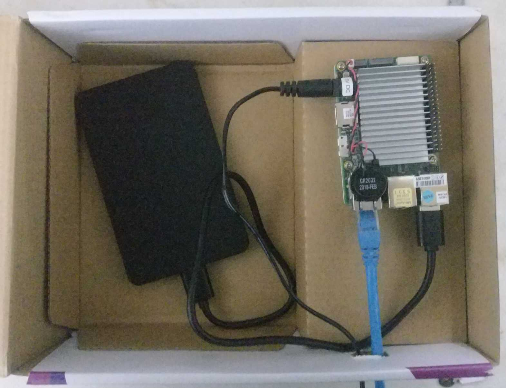
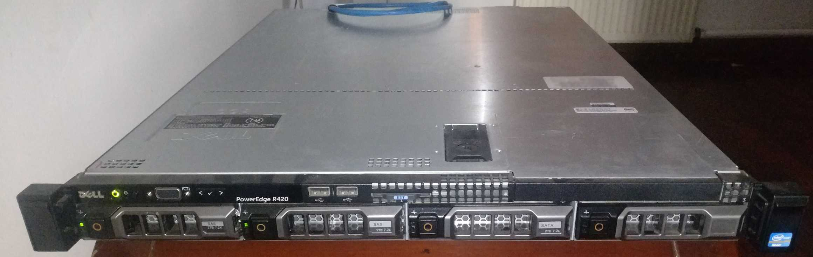
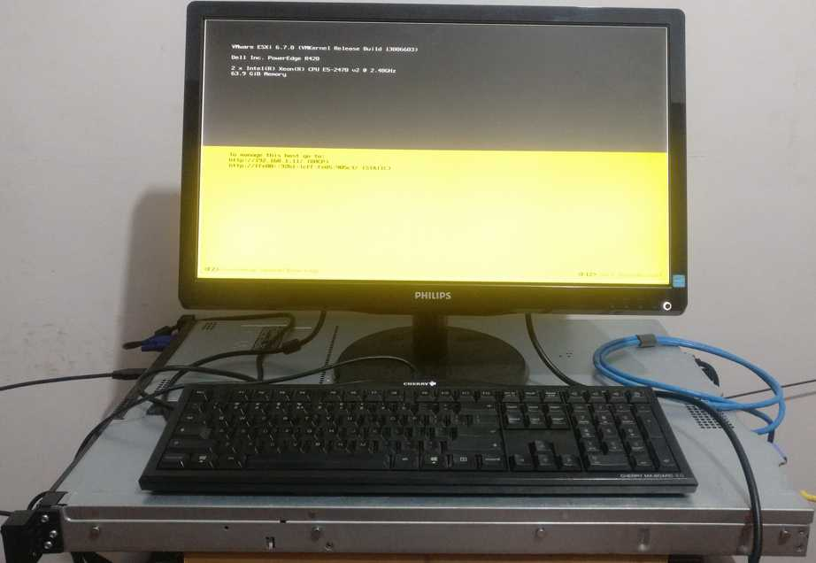

最开始用的是换下来的旧笔记本电脑 Dell Inspiron m5010，装了个 LinuxMint，放在家里当下载姬。
不过那个旧电脑噪音太大了，占用空间也大，于是在 2018 年 8 月我买了个 Up Board 开发板作为新的下载姬。

硬件配置还算行:
- Intel Atom x5-Z8350 (64bit, 4 core, no hyperthreading)
- 4GB RAM
- 64 GB eMMC storage
- USB 2.0 connector * 4
- USB 3.0 OTG connector * 1
- 1 Gbps Ethernet RJ-45 connector
- HDMI output
完整的配置信息可以看这里: Up Board Specs
购买架式(Rack-mounted)服务器
后来开发板也不够用了
- 开发板 USB 接口输出电压很低，带一个机械硬盘都吃力
- 有时候插满 USB 接口后，甚至会导致电压过低而重启
- 供电不足还会导致硬盘损伤甚至数据丢失
以前经历过的一次数据丢失已经把我吓怕了，于是这次干脆直接买了个二手 1U 服务器。配置如下:
- Dell PowerEdge R420 Barebone
- Intel Xeon E5-2470v2(10c, 20t) * 2
- 不知道什么牌子的内存 单条16G * 4，带 ECC REG
- PERC H710 RAID卡
- 不带硬盘
- 其它一些配件
共 3035 CNY。然后又单独去京东买了点东西:
- WD Gold 1TB * 2; 669 CNY/个
- WD HC510 8TB * 2; 2399 CNY/个
算上前面的服务器，加起来一共 9171 CNY。下图是这个服务器的外观。

因为后两个硬盘还没买到，所以右边两个硬盘位是空的。
裸机固件升级，然后装了个 ESXi，跑了几个虚拟机，目前用起来还不错。
